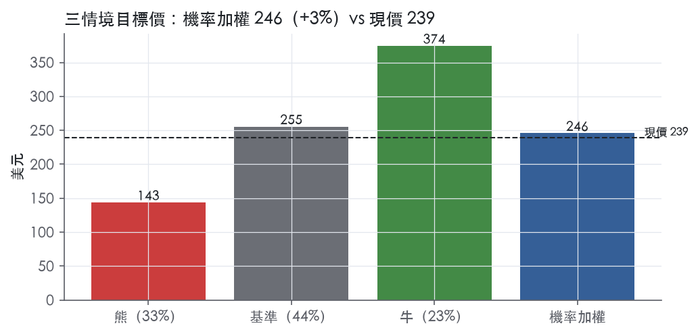
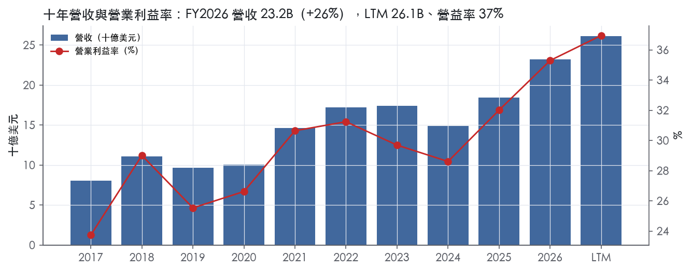
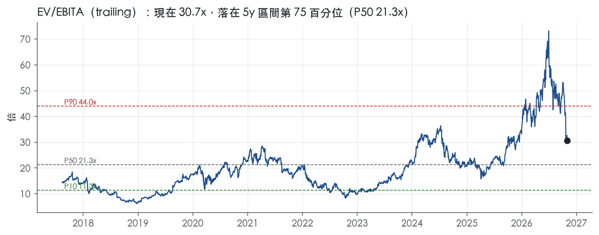
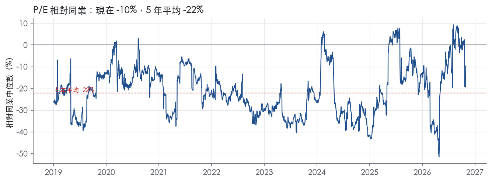
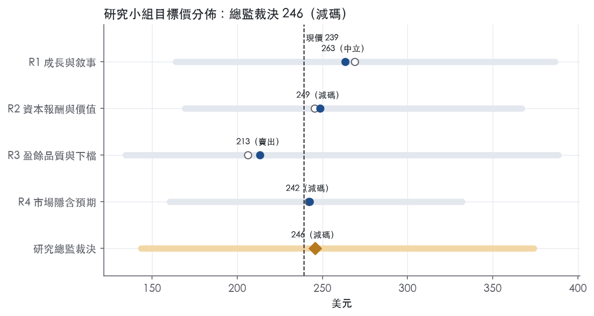
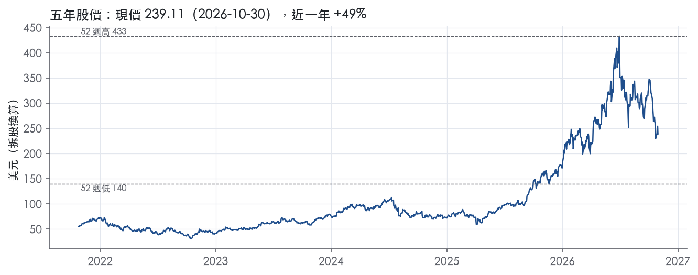

評等總表 › 資訊科技 › LRCX
頂端盈餘已定價，第四年高原，相對看空｜評等 減碼｜目標價 246
| 報告日 | 評等 | 目標價 | 當時股價 | 超額報酬 |
|---|---|---|---|---|
| 2026-10-30 | 減碼 | 246 | 239 | -6.8% |
| 評等 | 減碼（邊界，鄰近中立） |
| 12 個月目標價 | 246 美元 |
| 現價 | 239.11 美元（2026-10-30） |
| 預期報酬 | 股價 +2.7%＋股息 0.5%＝總報酬 +3.2%；同業籃門檻 10.0%，超額 -6.8% |
| 估值方法 | EV/EBITA 22.0x，套在第 5–8 季的EBITA（也就是一年後的未來四季） |
| 三情境 | 熊 143／基準 255／牛 374 |
| 研究流程 | 四位研究員兩輪辯論＋研究總監裁決 |
| 資料來源 | SEC EDGAR XBRL、Tiingo、FRED（全免費） |
頂端盈餘已定價，第四年高原，相對看空（研究總監裁決，四位研究員兩輪辯論後）
評等 減碼（邊界，鄰近中立）｜12 個月目標價 246 美元（總監三情境機率加權 246 與研究員中位數 246 各半）｜現價 239.11（2026-10-30）
預期報酬：股價 +2.7%＋股息 0.5%＝總報酬 +3.2%。同業籃門檻 10.0%，超額 -6.8%，離中立的分界不到三個百分點，屬邊界評等（落在其他級距的機率約三成）。
估值方法：EV/EBITA 22.0x，套在第 5–8 季的EBITA（也就是一年後的未來四季）。三情境：熊 143（33%）／基準 255（44%）／牛 374（23%）。
什麼會讓研究總監改變看法：2027 年 1 月的 3 月季指引中點高於 9.0B、客戶支援營收恢復季增、中國占比維持 35% 而 CFO/淨利 ≥1x，代表需求真實且週期延長，y2 上修到 8%、倍數上修到 24x；2027 上半年新增設備管制且任一記憶體大廠下修資本支出，熊機率上移、倍數下修。
| 過去四季（實際，FY2027Q1） | 未來四季 | 第 5–8 季 | 第 9–12 季 | |
|---|---|---|---|---|
| 營收（B） | 26.1B | 34.5B | 35.2B | 33.1B |
| 營收成長 | 33.4% | 32.0% | 2.0% | -6.0% |
| 營業利益率 | 37.0% | 40.0% | 39.0% | 37.0% |
| EPS（美元） | 6.71 | 9.61 | 9.66 | 8.68 |
| EPS 成長 | 48.3% | 43.2% | 0.5% | -10.1% |
| 每股股息（美元） | 1.11 | 1.11 | 1.11 | 1.11 |
| P/E（現價） | 35.7x | 24.9x | 24.8x | 27.5x |
| 股息殖利率（現價） | 0.5% | 0.5% | 0.5% | 0.5% |
過去四季為申報數字；預測為研究總監的假設、程式計算。倍數與殖利率都用現價計算，用來看現價對應各期獲利的高低。
| 情境 | 機率（歷史） | 故事 | 未來四季營收成長 | 第 5–8 季營益率 | 倍數 | 目標價 | 股價漲跌 |
|---|---|---|---|---|---|---|---|
| 熊 | 33%（31%） | 對應風險表第 1 條：中國出口管制擴大切掉 35% 占比的系統營收，疊加第四年消化（第 3 條溫和版），營益率依 FY2019／FY2024 幅度回落，目標回到 52 週低點附近；對應本行下行路徑（R3 熊，y1 改 26%） | 26.0% | 35.0% | 16.0x | 143 | -40.0% |
| 基準 | 44%（46%） | 未來四季守在 12 月季指引水位、營益率 40%，Q5–Q8 進入第四年高原，市場對頂端盈餘付的前瞻倍數持平不再擴張 | 32.0% | 39.0% | 22.0x | 255 | 6.8% |
| 牛 | 23%（23%） | 本行上行路徑下 HBM 與先進邏輯擴產延長週期一年，2028 年再成長 15%、營益率 42%，市場付 KLAC 式倍數（取 R4 驅動、R3 牛倍數 26x） | 36.0% | 42.0% | 26.0x | 374 | 56.4% |
目標價由程式依研究總監的驅動與倍數計算；機率由研究總監給定。括號內是歷史頻率：把這檔股票過去十年 12 個月報酬的波動形狀，置中在基準情境，結果落在各情境附近的比例。

四位研究員用不同方法各自估值，回應研究總監的質疑後交出第二輪，最後由總監逐點裁決。各研究員的主張見第七章，裁決理由見第八章，完整論證見《研究底稿》。
| 立場（一輪→二輪） | 加權目標價（一輪→二輪） | 評等（一輪→二輪） | 第二輪倍數 | 熊～牛目標價 | |
|---|---|---|---|---|---|
| R1 成長與敘事 | 看多→中性 | 269→263 | 中立→中立 | 24.0x | 164～387 |
| R2 資本報酬與價值 | 看空→看空 | 245→249 | 減碼→減碼 | 22.0x | 169～367 |
| R3 盈餘品質與下檔 | 看空→看空 | 206→213 | 賣出→賣出 | 19.0x | 134～389 |
| R4 市場隱含預期 | 看空→中性 | 242→242 | 減碼→減碼 | 20.0x | 160～332 |
| 研究總監裁決 | 看空 | 246 | 減碼 | 22.0x | 143～374 |
目標價由程式依各自的驅動與倍數計算；評等＝機率加權總報酬 − 同業籃門檻。
Lam Research 是一家為半導體產業提供晶圓製造設備與服務的全球供應商¹。公司核心能力集中在奈米級製造、化學、電漿與流體、先進系統工程等領域，產品用於協助客戶製造更小、效能更佳的晶片，應用在手機、PC、雲端與企業伺服器、穿戴裝置、汽車與資料儲存設備¹。客戶群涵蓋領先的半導體記憶體、晶圓代工（foundry）與整合元件製造商（IDM），產品包括非揮發性記憶體（NVM）、動態隨機存取記憶體（DRAM）與邏輯元件¹。本質上這是一家賣「製程設備＋耗材＋服務」給全球前段晶圓廠的公司，客戶數高度集中在少數記憶體與晶圓代工巨頭。
Lam 的產品線分為沉積（Deposition）、蝕刻（Etch）、清洗（Clean）與乾式光阻（Dry Resist）四大製程技術群，另設有客戶支援事業群（Customer Support Business Group, CSBG）¹。沉積類產品包括 SABRE（電化學沉積）、ALTUS（CVD/ALD 鎢鉬沉積）、VECTOR 與 Striker（介電膜沉積）系列¹。蝕刻類產品包括 Kiyo、Versys Metal、Akara（導體蝕刻）、Flex、Vantex（介電蝕刻）、Syndion（深矽蝕刻／TSV）、Argos、Prevos、Selis（選擇性蝕刻）¹。清洗類包括 EOS、DV-Prime、Da Vinci、SP Series（濕式清洗）與 Coronus（邊緣電漿清洗）¹。乾式光阻方面則有 Aether 產品家族，支援 EUV 與 Numerical Aperture EUV 微影的乾式光阻製程¹。CSBG 提供設備全生命週期服務，包括客服、備品、升級，以及 Reliant 品牌的非最先進新品與翻新設備¹。10-K 未揭露各產品線或各分部各自佔營收的具體比重，但新聞稿有揭露「系統」與「客戶支援相關」兩大收入類別：FY2027Q1 系統營收 5,732.9M 美元、客戶支援相關營收 2,486.5M 美元²；FY2026Q4 系統營收 4,249.8M 美元、客戶支援相關營收 2,472.4M 美元³。系統營收代表前段領先製程新設備銷售，客戶支援營收代表服務、備品、升級與 Reliant 非領先製程設備銷售²。可見系統業務占比約七成、且近兩季成長明顯快於服務業務，反映新一輪資本支出循環帶動新機台下單加速。公司在深度沉積、蝕刻、清洗市場的領導地位，加上先進封裝（扇出型面板封裝、HBM 3D 堆疊）與 CIS、MEMS 等鄰接市場布局，是其差異化的主要來源¹。
客戶高度集中於記憶體與晶圓代工龍頭：FY2024–FY2026 最重要客戶包括 Micron Technology、Samsung Electronics、SK hynix 與台積電（TSMC）¹。地區上，FY2027Q1 營收分布為中國 35%、韓國 20%、台灣 18%、日本 9%、美國 8%、東南亞 6%、歐洲 4%²；上一季（FY2026Q4）則為台灣 27%、中國 26%、韓國 20%、日本 9%、美國 9%、東南亞 5%、歐洲 4%³。單季之間台灣與中國排名互換，顯示客戶資本支出時程高度波動、季度間地區混合變化大。通路上公司採直接銷售與服務模式，在美國、中國、歐洲、印度、日本、韓國、東南亞、台灣均設有服務工程師網絡，強調與客戶的長期合作關係¹。製造上部分組裝與測試採委外安排以提高產能彈性，部分零組件僅有單一供應來源¹。
FY2026Q2（截至 2025-12-28）營收 5.34B 美元，年增 22.1%，毛利率 49.6%，營益率 33.9%（is 系列 FY2026Q2 資料包）。FY2026Q3（截至 2026-03-29）營收 5.84B 美元，年增 23.8%，毛利率 49.8%，營益率升至 35.0%（資料包 FY2026Q3）。FY2026Q4（截至 2026-06-28）營收 6.72B 美元，季增 15.1%，毛利率 51.7%、營益率 37.4%、GAAP 稀釋 EPS 1.81 美元³；公司當季指引下一季（FY2027Q1）營收 8.10B 美元±400M、毛利率 52.0%±1%、營益率 39.5%±1%、GAAP 稀釋 EPS 2.15 美元±0.15 美元³。FY2027Q1（截至 2026-09-27）實際營收達 8.22B 美元，季增 22%，毛利率 52.3%、營益率 40.0%、GAAP 稀釋 EPS 2.19 美元，三項財務指標皆創歷史新高²；系統營收 5,732.9M 美元，客戶支援營收 2,486.5M 美元²；期末現金餘額增至 7.45B 美元（前季 5.60B 美元），遞延收入增至 2.66B 美元（前季 2.43B 美元）²。公司對 FY2027Q2（截至 2026-12-27）的指引為：營收 8.60B 美元±400M 美元、GAAP 毛利率 52.5%±1%、GAAP 營益率 40.5%±1%、GAAP 稀釋 EPS 2.33 美元±0.15 美元²。四個季度營收與利潤率連續雙升，顯示 AI 驅動的先進製程資本支出循環正在加速放量，且公司規模經濟逐季兌現為營益率擴張。
公司將成長歸因於人工智慧、雲端基礎設施、通訊、車用及工業智慧系統對高效能、高能效、高整合度半導體元件的需求，推動半導體製造商採用垂直擴展架構（3D structure）、更精密的圖形化方案、新材料與先進整合方法，傳統二維微縮已愈發困難，這些技術轉折正在提高製造複雜度與精密度要求，進而拉動對公司先進晶圓製造技術與服務的需求¹。公司表示在沉積、蝕刻、清洗市場的領導地位與專業知識，使其能促成半導體製造的重大創新，差異化優勢來自：研發投入（持續性工程、產品與製程開發、概念與可行性驗證）、善用龐大裝機基礎的學習循環、與半導體生態系夥伴及客戶緊密合作、投資廣泛產品組合以應對技術轉折、以多產品解決方案提升對客戶的價值¹。管理層在最近兩次財報新聞稿中強調，AI 驅動的半導體需求與元件複雜度上升，加上公司在技術轉折與製造產能上的策略性投資，正幫助其在晶圓製造設備市場擴張時跑贏大盤²，並表示 2026 年第三年連續超越市場表現³。整體看，Lam 的成長敘事高度綁定 AI 運算對先進邏輯與高頻寬記憶體（HBM）製程設備需求的拉動，加上客戶支援業務（備品、升級、Reliant）提供穩定的現金流緩衝。不過客戶集中度高（四大客戶即涵蓋多數營收）加上地區營收結構季度波動劇烈（中國、台灣、韓國互為第一大市場），意味著單一客戶或地緣政治事件對營收的敏感度不低。目前股價對應的估值倍數（EV/Sales 11.4x）已處於過去五年高分位，隱含市場已高度反映此輪 AI 資本支出循環的樂觀預期。

Lam Research 的護城河評級為寬，我們有把握它的 ROIC 在未來 10 年以上仍高於資本成本。護城河來自兩處：一是製程設備在客戶產線上完成認證後形成的轉換成本，二是長年累積的電漿、化學與製程整合專有技術。趨勢判為穩定，不判為變寬，原因有兩點。第一，近期 ROIC 與利潤率創新高，與 AI 帶動的資本支出上行週期重疊，週期與結構因素還無法分開。第二，出口管制與客戶集中帶來的下行風險沒有減輕。
主要優勢是轉換成本，其次是無形資產；成本優勢、網路效應、效率規模目前證據不足，不列入。
轉換成本
無形資產（專有技術與學習循環）
未列入的類別
看得到，而且是很強的證據；但數字也顯示這條護城河擋不住週期。
ROIC 長期遠高於資本成本
毛利率穩定
衝突點一：ROIC 波動大
衝突點二：最新值站在週期頂端
資本強度上升
最大的侵蝕風險來自地緣政治與客戶結構，而不是同業技術追趕。
出口管制與貿易限制
客戶集中與議價力
技術轉折失誤
供應鏈單點
目標倍數應高於同業，理由是 ROIC 在 9 年中 9 年高於資本成本、週期低點仍有 40.7%，可支撐長於同業的超額報酬期間。
不過，目前 EV/EBITA 30.7x 已高於 5 年中位數 21.3x，落在 74.5% 分位。估值研究員應以全週期平均 ROIC 與利潤率作為溢價基礎，而不是用頂峰時的 77.7%。
出口管制與市場集中的風險應反映在折現率或情境權重上，不應用來下修護城河評級本身。
| 指標 | 最新 | 十年平均 | 標準差 | 最低 | 最高 |
|---|---|---|---|---|---|
| ROIC | 77.7% | 56.8% | 12.4% | 40.7% | 77.7% |
| 毛利率 | 50.5% | 46.6% | 1.7% | 44.6% | 50.5% |
| 營業利益率 | 35.3% | 29.2% | 3.2% | 23.7% | 35.3% |
| FCF 利潤率 | 21.1% | 23.7% | 4.6% | 14.8% | 29.8% |
| ROE | 65.1% | 55.2% | 13.2% | 35.7% | 74.8% |
程式計算。資本成本代理值（10 年債＋5%）：10.0%；ROIC 平均減資本成本：46.8%；ROIC 有資料的 9 年中，高於資本成本 9 年。
LRCX 十年平均現金轉換（CFO／淨利 1.06x、FCF／淨利 0.95x）良好，但 LTM 降到 0.90x／0.77x，加上應收帳款成長比營收快 32pp 的紅旗，顯示近一年盈餘品質比過去三年弱一檔，但還稱不上「低品質」，因為沒有槓桿、稀釋或股東回饋的問題。
LTM 營業現金流／淨利僅 0.90x，低於近三年平均 1.06x 與十年平均 1.06x，燈號轉黃。FCF／淨利 LTM 0.77x，同樣低於近三年 0.93x 與十年 0.95x，也是黃燈。應計比率 LTM 為 +3.5%，高於近三年 -0.7% 與十年 -0.4%，代表近一年盈餘比過去更依賴應計項目而非現金，但尚未達到紅燈的 5.0% 門檻。拆開看季度資料，FY2027Q1 單季 CFO 3.50B、FCF 3.24B，對應淨利 2.75B，單季現金轉換其實是超過 1x 的（資料包 FY2027Q1 季表），顯示 LTM 偏弱主要是前面幾季（如 FY2026Q3 CFO 僅 1.14B 對淨利 1.83B）拖累，不是趨勢性惡化。整體看，現金跟上盈餘的速度在近一年打了折扣，但最新一季已經回升，屬於階段性而非結構性問題。
FY2027Q1 非 GAAP 與 GAAP 的差距很小：GAAP 稀釋 EPS 2.19 美元，非 GAAP 2.20 美元，差距只有 0.01 美元²。公司非 GAAP 排除項目為：business combination 相關無形資產攤銷、遞延薪酬相關資產負債影響、note discount 攤銷、非 GAAP 項目的所得稅效果，以及本季另外排除「a change in tax law 的所得稅效果」²。下一季（12月季）guidance 中揭露的調整金額很小：毛利率調整項 2.7M 美元、營益率調整項 3.0M 美元、EPS 調整項合計 3.3M 美元（含攤銷 3.0M、note discount 攤銷 0.5M、稅務利益 -0.2M）²。這些調整項金額相對 8.22B 營收與 2.75B 淨利極小，屬於真實但非核心的會計性費用（無形資產攤銷、票據折價攤銷），不是在粉飾核心營運表現。值得注意的是，計分表顯示 SBC／營收 LTM 僅 1.5%，低於近三年 1.8% 與十年 1.7%，而且本系統「不加回」SBC，這代表 GAAP 數字已經包含真實的股權薪酬成本，沒有被隱藏。
槓桿面非常乾淨：淨負債／EBITDA LTM 為 -0.37x（淨現金狀態），近三年平均 -0.24x、十年平均 -0.03x，全部綠燈。利息保障倍數 LTM 達 63.9x，遠高於近三年 36.1x 與十年 27.2x 的綠燈門檻，付息能力無虞。稀釋股數年變動 LTM 為 -0.4%，近三年平均 -2.4%、十年平均 -4.0%，顯示公司持續淨減少股數（回購效果大於發股稀釋），全部綠燈。股利加回購占淨利比例 LTM 61.6%，近三年平均 85.6%，十年平均達 99.1%，均在綠燈區間（≥50%），但十年平均逼近 100% 提示過去股東回饋力度接近甚至貼近當期盈餘水準，是否舉債回饋需留意，但目前淨負債為負，不構成風險。新聞稿也證實本季現金餘額從 5.60B 增加到 7.45B，主因是營運現金流入，部分被資本回饋與資本支出抵銷²，資產負債表持續強健。
程式標出唯一紅旗：應收帳款成長比營收成長快 32pp（FY2026）。這條必須正視——FY2026 營收年增 26.0%（資料包年度表），若應收帳款成長比營收快 32pp，意味應收帳款年增約 58%，遠超營收擴張速度。對照新聞稿揭露的 deferred revenue（遞延收入，負債端）從 2.43B 增加到 2.66B（季增，FY2026Q4→FY2027Q1）²，顯示公司收款條件並未全面惡化、預收款同步成長，這與應收帳款暴增的方向不完全一致，不能單純用「收入認列但未收現」解釋。比較合理的解釋是 FY2026 全年營收加速成長（Q4 單季年增 30.0%、FY2027Q1 單季年增 54.4%，資料包季表），在高速成長期應收帳款餘額本就會比營收成長更快墊高（時間點效應：期末出貨集中、尚未到收款期），這在資本設備產業的訂單尖峰期是常見現象，不必然是收入認列激進或客戶信用惡化的訊號。但由於 10-K 原文節錄中未包含應收帳款相關的具體揭露段落（僅到 Item 1 Business，未涵蓋 MD&A 應收帳款細項），無法用原文佐證管理層對此的直接說明，這條紅旗目前只能定性為「成長期的營運資金正常膨脹，風險可控但需下一季追蹤是否持續擴大」的部分可解釋紅旗，不是未解釋的結構性問題。黃燈三項（CFO／淨利、FCF／淨利、應計比率）已在「現金有沒有跟上盈餘」段落說明，核心結論是近一年現金轉換走弱，但最新單季（FY2027Q1）已回升到現金強於盈餘的狀態，屬於季度波動而非趨勢惡化。
GAAP 與非 GAAP EPS 差距極小（2.19 對 2.20 美元），估值可直接用 GAAP 數字，不需要額外調整非 GAAP 加回項。考慮 LTM 現金轉換偏弱與應收帳款紅旗尚未完全釐清，對盈餘給予小幅折價（例如用近三年平均現金轉換取代 LTM 數字做敏感性測試）較為謹慎，但不需要大幅度打折。淨現金資產負債表與高利息保障倍數不構成任何槓桿限制估值倍數的理由，目前 trailing P/E 35.7x（76.5% 五年分位）的高倍數主要反映成長與週期位置，不是盈餘品質溢價的問題。
| 項目 | LTM | 近三年 | 十年 | 燈號 | 規則 |
|---|---|---|---|---|---|
| 營業現金流／淨利 | 0.90x | 1.06x | 1.06x | 黃 | ≥1.00x 綠、<0.80x 紅 |
| 自由現金流／淨利 | 0.77x | 0.93x | 0.95x | 黃 | ≥0.90x 綠、<0.60x 紅 |
| 應計比率（(淨利−CFO)／平均總資產） | 3.5% | -0.7% | -0.4% | 黃 | ≤0.0% 綠、>5.0% 紅 |
| SBC／營收 | 1.5% | 1.8% | 1.7% | 綠 | ≤3.0% 綠、>8.0% 紅 |
| 淨負債／EBITDA | -0.37x | -0.24x | -0.03x | 綠 | ≤1.50x 綠、>3.00x 紅 |
| 利息保障倍數（營業利益／利息） | 63.9x | 36.1x | 27.2x | 綠 | ≥8.00x 綠、<3.00x 紅 |
| 稀釋股數年變動 | -0.4% | -2.4% | -4.0% | 綠 | ≤0.0% 綠、>3.0% 紅 |
| （股利＋回購）／淨利 | 61.6% | 85.6% | 99.1% | 綠 | ≥50.0% 綠、<0.0% 紅 |
| 應收帳款成長 − 營收成長（FY2026） | +32.0pp | — | — | 紅 | ≤5pp 綠、>15pp 紅 |
| 存貨成長 − 營收成長（FY2026） | -26.8pp | — | — | 綠 | ≤5pp 綠、>15pp 紅 |
程式計算；燈號以 LTM（無則近三年平均）判定。
| 風險 | 觸發指標（看什麼數字、在哪裡看） | 對 EPS 的影響方向與粗略幅度 | 未來 12 個月發生機率（高／中／低） | 出處 |
|---|---|---|---|---|
| 中國出口管制／地緣政治升級 | 中國區營收占比（財報新聞稿地區揭露表）、美國商務部實體清單新增公告 | 方向：負；FY2027Q1 中國占營收 35%，為單一最大地區，若管制擴大將直接砍系統營收² | 中 | 10-K 年報 FY2026 Item 1A（風險因素） |
| 客戶高度集中，單一大客戶砍單 | 四大客戶（Micron、Samsung、SK hynix、TSMC）各自資本支出指引與資本支出公告 | 方向：負，幅度大；公司自述「向少數大客戶的銷售佔整體出貨、營收、現金流與獲利的重大比例」⁵ | 中 | ⁵／ |
| 半導體資本支出循環反轉（AI 需求降溫或產能過剩） | 公司季度營收指引區間是否下修（8-K outlook）、系統營收季增率（財報新聞稿揭露表） | 方向：負，幅度大；系統營收占比約七成、季增波動劇烈（FY2027Q1 系統營收 5,732.9M 美元 vs FY2026Q4 4,249.8M 美元）² | 中 | 10-K 年報 FY2026 Item 1A（風險因素） |
| 技術轉折押錯方向／新產品商業化失敗 | 研發費用占營收比重趨勢、新產品（如 Akara、Aether）在財報新聞稿或法說的滲透率揭露 | 方向：負，幅度中；公司承認若未能及時開發正確技術解決方案「可能對業務造成重大不利影響」⁵ | 低 | 10-K 年報 FY2026 Item 1A（風險因素） |
| 關稅與供應鏈成本上升 | 美國對中國/其他國家新關稅公告、毛利率季度變化（財報新聞稿） | 方向：負，幅度中；公司明確列為導致毛利率與營運結果波動的因子之一⁵ | 中 | 10-K 年報 FY2026 Item 1A（風險因素） |
中國出口管制／地緣政治升級是目前最該盯的風險，因為它同時踩中集中度與政策不確定性兩個痛點。10-K 明確寫出「美國政府已實施一系列出口管制，限制對中國客戶銷售特定技術，包括將多個客戶列入實體清單，從而限制美國設備供應商的設備與備品銷售」⁵，且這項限制「對我們不利，使未受此限制的國際競爭商取得優勢」⁵。業務概況章揭露 FY2027Q1 中國區營收占比達 35%，是七個地區中最高²。觀察指標很具體：每季財報新聞稿的地區營收揭露表、以及商務部實體清單更新公告，任何一項惡化都會直接衝擊系統營收這個占比七成以上的收入來源。
客戶高度集中是結構性風險，不是景氣循環能解決的。10-K 寫得很直白：「向少數大客戶的銷售構成我們整體出貨、營收、現金流與獲利的重大比例……即使單一客戶的行動也可能使我們面臨難以預測的波動」⁵，而且「大客戶可能有能力談判出降價、增加成本及/或降低我們利潤率的條件」⁵。業務概況章指名最重要客戶為 Micron、Samsung、SK hynix、台積電四家¹。監測方式是追蹤這四家公司各自的資本支出指引與季度公告，任何一家的大幅下修都該視為營收預警。
半導體資本支出循環反轉是這份財報敘事最依賴、但也最脆弱的一環。10-K 自己列出一長串可能讓 AI 驅動需求逆轉的因子：「AI 相關基礎設施或運算力的實際或預期需求變化……運算效率提升，或 AI 相關基礎設施運算力的供過於求」都可能讓資本支出的金額與時程「迅速改變」⁵。目前系統營收（新機台銷售）季增率非常陡峭，FY2027Q1 較前季成長 22%、較去年同期成長 54.4%（dv 衍生，LTM 營收 26.13B 美元對照 FY2026 全年 23.23B 美元），這種斜率一旦反轉，營益率會因固定成本攤薄效果消失而同步惡化，不只是營收下降。觀測指標就是每季 8-K 的指引區間是否開始下修。
技術轉折押錯方向機率較低但傷害屬性不同——不是砍單式衝擊，而是長期市占流失。10-K 寫到「若新產品或既有產品有可靠性、品質、設計或安全問題」會導致「訂單減少、製造成本提高、新產品驗收與付款延遲、額外服務與保固費用，以及市占流失」⁵，且「未來技術、製程或產品發展，包括因採用 AI 所致，可能使我們現有產品線過時」⁵。這類風險很難用單一財報數字即時監測，只能看研發費用率是否持續投入與新產品線在法說會的揭露頻率。
關稅與供應鏈成本上升影響幅度中等，但已經在發生。10-K 列舉導致營運結果波動的因子包括「進出口法規與關稅變化……以及其他國家對進口徵收的額外關稅」⁵。觀測指標是逐季毛利率變化：公司近四季毛利率持續上升（FY2026Q2 49.6% → FY2027Q1 52.3%，資料包／8-K 2026-10-21），目前看不出關稅侵蝕毛利的痕跡，但這是一個會隨政策突然轉差的風險，需要每季追蹤。
估值已反映過度樂觀的循環高點：目前 EV/Sales 11.4x 處於過去五年 83.4 百分位、P/FCF 45.9x 處於 85.4 百分位（資料包倍數帶），遠高於十年中位數（ev_sales 5.1x、p_fcf 22.0x）。10-K 不會也不該討論自家股價倍數，但這代表市場已經為「AI 資本支出循環持續擴張」這個假設付出很高的溢價，任一條上述風險兌現，倍數壓縮的幅度可能比 EPS 下修本身更傷股價。
客戶支援業務成長放緩可能被系統業務的高成長掩蓋：業務概況章指出客戶支援相關營收（服務、備品、Reliant）在 FY2026Q4 到 FY2027Q1 幾乎持平（2,472.4M→2,486.5M 美元），遠低於系統營收的季增速度²,³。客戶支援業務理論上是裝機基礎帶來的穩定現金流來源，若其成長持續落後於系統業務，代表存量設備的服務黏著度或升級需求可能不如預期，這在景氣反轉時會失去原本該有的緩衝效果，但 10-K 並未單獨點名這個分項風險。
現價 239.11 對應 trailing（過去四季）P/E 35.7x、EV/EBITDA 29.2x、EV/EBITA 30.6x、EV/Sales 11.3x、FCF 殖利率 2.2%。主要估值倍數 EV/EBITA 現在 30.7x，落在5 年區間第 75 百分位（P10／P50／P90 = 11.3x／21.3x／44.0x）。

把程式的機械基準預測放到現價下，市場付的前瞻倍數是：EV/EBITA（未來四季） 24.6x、P/E（未來四季） 28.7x、EV/EBITA（第 5–8 季） 21.4x、P/E（第 5–8 季） 24.6x。反推 DCF 顯示市價隱含未來五年營收年成長 16.9%（WACC 9.0%、終值成長 3.0%、FCF 利潤率 30.3%，SBC 不加回）。
| 倍數 | 現在 | 5 年 P10 | 5 年 P50 | 5 年 P90 | 現在分位 | 全期 P50 |
|---|---|---|---|---|---|---|
| P/E | 35.7x | 13.4x | 24.3x | 50.0x | 76.5% | 21.6x |
| EV/EBITDA | 29.3x | 10.8x | 19.9x | 41.7x | 77.1% | 16.6x |
| EV/EBITA | 30.7x | 11.3x | 21.3x | 44.0x | 74.5% | 17.7x |
| EV/EBIT | 30.7x | 11.5x | 21.4x | 44.0x | 73.7% | 18.2x |
| EV/Sales | 11.4x | 3.6x | 6.3x | 15.0x | 83.4% | 5.1x |
| P/S | 11.5x | 3.6x | 6.3x | 15.0x | 83.5% | 5.1x |
| P/FCF | 45.9x | 18.3x | 24.3x | 54.1x | 85.4% | 22.0x |
trailing 倍數（股價 ÷ 過去四季）；分位以每個交易日計算。
同業籃：AMAT, KLAC, TER, ONTO, ENTG（手動名單（playbooks/peers.yaml））。評等門檻 10.0%：同業「倍數不變下持有一年」的隱含報酬中位數（＝ FCF 殖利率 ×(1＋g)＋g，g 為 5 年營收年複合成長並夾在 −2%～8%），每家夾在 0～15%、P/E 低於 5 倍視為資料可疑而排除，中位數再限制在 10 年債到 10 年債＋5% 之間（同業原始中位數 10.1%）。
| 代號 | 市值 | 5 年營收 CAGR | 營益率 | ROIC | P/E | 5 年 P/E 中位數 | EV/EBITDA | P/FCF | 隱含報酬 |
|---|---|---|---|---|---|---|---|---|---|
| LRCX | 298.7B | 9.7% | 37.0% | 77.7% | 35.7x | 24.3x | 29.2x | 45.7x | 10.4% |
| AMAT | 309.6B | 10.5% | 29.6% | 35.9% | 33.7x | 20.7x | 31.9x | 55.1x | 10.0% |
| KLAC | 207.0B | 14.4% | 40.7% | 70.2% | 39.5x | 29.0x | 33.5x | 51.3x | 10.1% |
| TER | 42.8B | 0.4% | 32.1% | — | 31.6x | 31.8x | — | 41.8x | 2.8% |
| ONTO | 9.9B | 12.6% | 12.0% | 8.8% | 75.7x | 38.4x | 36.6x | 39.1x | 10.8% |
| ENTG | 23.6B | 11.4% | 18.2% | 5.8% | 60.2x | 60.7x | 33.2x | 38.3x | 10.8% |
| 同業中位數 | 11.4% | 29.6% | 22.3% | 39.5x | 31.8x | 33.4x | 41.8x | 10.0% |
全部 trailing，程式以各公司 SEC XBRL 與 Tiingo 行情計算；第一列為本檔。
P/E 相對同業中位數：現在 -9.8%，過去 1 年平均 -14.6%、3 年 -18.5%、5 年 -22.2%；EV/EBITDA 相對同業中位數：現在 -12.4%，過去 1 年平均 8.8%、3 年 -1.1%、5 年 -9.5%。

事後實現前瞻倍數帶（EV/EBITA，2018-11-12..2025-11-10）：P10／P50／P90 = 10.4x／14.4x／20.5x。它是每個交易日的股價除以之後四季實際實現的指標；一年後，今天的第 5–8 季正是那時的未來四季，所以這條帶是 12 個月目標價的同口徑倍數。因為用的是事後實際而非當時預期，過去成長超乎預期的公司這條帶會偏低。
程式的機械基準（成長率從過去四季年增率三年收斂到 6%、利潤率持平）用 事後實現前瞻 EV/EBITA P50 估值得到 170（-29.0%），市場現行前瞻倍數（現價 ÷ 基準 未來四季指標）一年後持平，套在基準 第 5–8 季指標得到 285。這兩個數字只是參考點，不是本報告的目標價；研究員對這個定價的回應在第七章。
下表是每位研究員第一輪（各自獨立）與第二輪（回應研究總監的質疑後）的結果。目標價全由程式依各自的假設計算。
| 立場（一輪→二輪） | 加權目標價（一輪→二輪） | 評等（一輪→二輪） | 第二輪倍數 | 熊～牛目標價 | |
|---|---|---|---|---|---|
| R1 成長與敘事 | 看多→中性 | 269→263 | 中立→中立 | 24.0x | 164～387 |
| R2 資本報酬與價值 | 看空→看空 | 245→249 | 減碼→減碼 | 22.0x | 169～367 |
| R3 盈餘品質與下檔 | 看空→看空 | 206→213 | 賣出→賣出 | 19.0x | 134～389 |
| R4 市場隱含預期 | 看空→中性 | 242→242 | 減碼→減碼 | 20.0x | 160～332 |
| 研究總監裁決 | 看空 | 246 | 減碼 | 22.0x | 143～374 |
目標價由程式依各自的驅動與倍數計算；評等＝機率加權總報酬 − 同業籃門檻。
分歧度：第一輪 加權目標價 206～269（區間＝現價的 26%）· 倍數 19～24x · 立場 看多×1、看空×3；第二輪 加權目標價 213～263（區間＝現價的 21%）· 倍數 19～24x · 立場 中性×2、看空×2。

| 研究員 | 第二輪主張 | 堅持的理由 |
|---|---|---|
| R1 成長與敘事 | 中立。未來四季營收成長 32%，倍數 24 倍。 | 過去一年市場付的倍數不能當終點，倍數應回到完整週期中位數。 |
| R2 資本報酬與價值 | 偏空。未來第二年營收成長 2%，倍數 22 倍。 | 利潤率上移已算進盈餘，再給高倍數等於重複計算。 |
| R3 盈餘品質與下檔 | 偏空。帳目乾淨，未來第二年營收成長 2%，倍數 19 倍。 | 中國占比 35% 加上客戶集中，倍數不往現行 30.7 倍靠。 |
| R4 市場隱含預期 | 中立。不預期股價下跌，但報酬不到門檻，倍數 20 倍。 | 市場沒有定價週期谷底，利潤率最早在未來第三年回落。 |
每位研究員的逐條回應與完整論證見《研究底稿》（LRCX_研究底稿_2026-11-01.docx）。
| 分歧點 | R1 | R2 | R3 | R4 | 什麼資料會分出勝負 |
|---|---|---|---|---|---|
| NTM 營收成長 y1 | 32% | 31% | 28% | 33% | 2027-01 法說的 3 月季指引中點：≥8.6B 支持 31–33%，<8.2B 支持 28% |
| Q5–Q8 成長 y2（第四年） | 8% | 2% | 2% | 8% | 2027-07 的 9 月季指引相對 6 月季實際；記憶體三大廠 2027/28 資本支出；客戶支援營收是否恢復季增 |
| 基準倍數 | 24x@ntm | 22x@ntm | 19x@q5_q8 | 20x@q5_q8 | 一年後 trailing EV/EBITA 落點；同業 P/E 是否自 5 年中位數以上回落 |
| 牛情境倍數 | 30x | 30x | 26x | 23x | 2027 下半年若仍有加速指引，trailing 倍數是否守住 1 年帶 P10 31.0x |
| 熊情境形狀 | 雙觸發、營益率 32%、18x→164 | 雙觸發、32%、17x→169 | 單觸發、35%、16x→134 | 雙觸發、35%、18x→160 | 商務部實體清單公告、季報中國占比、記憶體大廠下修資本支出 |
一、y1：選 R1 的 32%。 12 月季指引 8.60B±400M、遞延收入 2.43B→2.66B、FY2027Q1 CFO 3.50B 高於淨利 2.75B²，近端有訂單與收現雙重支撐。R1 自述 32% 是未來四季守在指引水位、不外推季增，R4 的 33% 相鄰。R3 的 28% 要求 3 月季起連續季減，卻拿不出 NTM 內的觸發事件——他自己的熊觸發也放在 2027 上半年；本部營收預測系統性偏低（R3 −0.7%、總監 −0.4%），往指引下方偏離是往偏誤方向走。R2 的 31% 無獨立證據，且他營收勝過基準的比例僅 46%。
二、y2：選 R3 的 2%，這是最決定估值的一點。 (1) 前例：FY2018 +38.2% 後 FY2019 −12.9%；FY2021 +45.6%、FY2022 +17.8%、FY2023 +1.2% 後 FY2024 −14.5%（dv.revenue_growth）。本輪 FY2025 +23.7%、FY2026 +26.0%、FY2027Q1 年增 54.4%，Q5–Q8 是第四年，沒有第四年還成長 8% 的紀錄。(2) FY2027Q1 系統營收由 4,249.8M 跳到 5,732.9M 而客戶支援幾乎持平，與中國占比 26%→35% 同季出現³,²，是容量尖峰的形狀，而 10-K Item 1A 明載實體清單限制設備與備品銷售。(3) R2 的反駁成立：遞延收入證明 NTM 能見度，證明不了 Q5–Q8 的訂單；R1/R4 的 8% 只有「AI 延長週期」與管理層「連三年跑贏 WFE」的敘事，沒有 2028 年的可觀測數字，本行 GDP 1.8（低於共識 2.4）也不支持第四年加速。但剔除 R3 一條證據：客戶支援「連兩季持平」只有一個季增數據點，同一張表的年增是 1,776.6M→2,486.5M²，裝機基礎在擴張，這條不能當 y2 的理由；2% 建立在前兩條之上。
三、基準倍數：選 R2 的 22x，口徑改為劇本主尺 q5_q8。 我的基準 y2 僅 2%、營益率 40%→39%，兩期 EBITA 相近，口徑切換影響小（以程式為準）。不給 R1 的 24x：結構上移是真的（ROIC 77.7%、FY2027Q1 毛利率 52.3%），但已在盈餘端認帳——y1 營益率 40% 高於十年年度最高 35.3%；5 年窗口 P50 21.3x 已含 FY2021–FY2026 的高利潤體制，再加護城河溢價是重複計算。不給 R3 的 19x／R4 的 20x：事後前瞻帶的樣本期多數年度營益率在 25–32%、且成長期系統性偏低；更重要的是壓縮已走大半——trailing EV/EBITA 從 1 年帶 P50 44.0x 降到 30.7x、分位 7.9%，股價從 433.33 回到 239.11，R1 這點是對的。市場今天對基準 Q5–Q8 盈餘付 21.4x，22x 約等於「市場今天付的前瞻倍數持平、不擴張也不再壓」，與本行科技指引「倍數以現值為準」一致。低於市場持平參考點 24.6x 的理由全是個股的：Q5–Q8 是頂端盈餘、Q9–Q12 轉負、中國占比 35%；R3 用「10 年期 4.98 不回落」當倍數理由那句不算。相對同業：P/E 折價 −9.8%、EV/EBITDA −12.4% 維持現位（R4 修正後立場）。
四、牛情境倍數：選 R3 的 26x，套在 R4 的牛驅動上。 R1/R2 的 30x 等於現行 trailing 倍數在 41–42% 營益率的頂端盈餘上再持平一年，是 1 年帶 P10 31.0x 附近的位置，需要週期消失。R4 的 23x——他拒絕我 E3 的理由在基準成立、在牛情境不成立：牛的定義是市場看到週期延長一年，KLAC 營益率 40.7%、P/E 39.5x 對自家 5 年中位 29.0x（同業表）說明此時市場付遠高於中位的倍數；26x 仍低於現行 30.7x。驅動取 R4 的 36%／15%／2%、41.5%／42%／40% 而非 R3 的 43%：R1 在 G3 拆解過，43% 要毛利率站上 52.5%±1% 指引區間頂端之外且費用停止成長，無先例。
五、熊情境：選 R3 的單一觸發（風險表第 1 條）、16x，y1 由 18% 改為 R4 的 26%。 12 月季已指引 8.60B、遞延收入 2.66B、日本待認列出貨 468.3M²，NTM 掉到 18% 需要立即性衝擊，而 R3 自己把觸發放在 2027 上半年；26% 對應管制春季擴大、6 月與 9 月季下滑。營益率依 FY2019（29.0%→25.5%）、FY2024（29.7%→28.6%）兩次下行年只掉 1–3.5 個百分點（dv.op_margin），R3 修正後的 39%→35% 合理；R1/R2 的 32%／30% 比公司兩次下行都嚴重，R4 的雙觸發配 18x 又把倍數給得太高。16x 介於前瞻帶 P50 14.4x 與 P75 17.3x、高於 trailing 5 年 P10 11.3x：單一觸發下市場部分看穿谷底。
漂移與總經。 退回的漂移：無。R2 向中位數靠攏比例 −83%（遠離），R1／R3／R4 為 21%／18%／20%，每項修正都附證據或直接回應我第一輪意見（R1 G1 改立場、R3 Q1 重寫熊情境、R4 E4 回到歷史起點）。程式標的對不上數字：R1 的 8.40B、R3 的 9.00B 已標假設門檻，R3 的 38.5／36.5 是其第一輪數字，R4 兩處算術字樣是 FCF 恆等式的文字推演，皆接受。總經偏離：四人 macro_deviations 皆空，無需裁決；本行前提直接套用——10 年期 4.98 不回落，倍數不靠利率；GDP 1.8 不支持第四年加速；牛對應本行上行路徑（GDP 2.8），熊對應下行路徑（GDP 0.3、利差 2.30），觸發點是個股的。R4 立場中性而評等減碼的不一致，由我以相對看空的立場收掉。
目標倍數 22x EV/EBITA，套 Q5–Q8 EBITA（第 5–8 季，EV 減 NTM 期末淨負債）。錨：事後實現前瞻帶 P90 20.5x 之上，溢價反映帶在成長期偏低與利潤體制上移；交叉驗證 trailing 5 年 P50 21.3x（ntm 口徑，兩期 EBITA 相近）與市場隱含 Q5–Q8 21.4x。R2 同為 22x 的點估 252，我的結果應落在同一區域。
| 情境 | 機率 | 來源 | 營收成長 y1／y2／y3 | 營益率 y1／y2／y3 | 倍數 |
|---|---|---|---|---|---|
| 牛 | 23% | R4 驅動＋R3 牛倍數 | 36%／15%／2% | 41.5%／42%／40% | 26x |
| 基準 | 44% | 總監 | 32%／2%／−6% | 40%／39%／37% | 22x |
| 熊 | 33% | R3 熊，y1 改 26% | 26%／−10%／0% | 39%／35%／35% | 16x |
牛：本行上行路徑下 HBM 與先進邏輯擴產把週期延長一年，2028 年再成長 15%，市場付 KLAC 式倍數。熊：風險表第 1 條中國出口管制擴大，切掉 35% 占比裡的系統營收，疊加第四年消化（第 3 條的溫和版），營益率依 FY2019／FY2024 幅度回落；對應本行下行路徑。R3 同構熊的 134 貼近 52 週低點 139.59，我的 y1 較高，應落在 R3 的 134 與 R4 的 160 之間（程式）。
機率從歷史基準率出發。這檔股票的置中分布左偏：P10 −49% 對 P90 +49%，P25 −32% 對 P75 +19%；相對中位數 ≤−20% 有 35%、≥+20% 只有 24%；程式對四位研究員的對照全部是熊≥牛（R1 27／33、R2 23／36、R3 14／34、R4 30／35）。所以熊 33%＞牛 23% 是這檔股票的歷史頻率，不是研究部 22 份報告的慣性；我也沒有在歷史頻率之上再加偏空調整——出口管制已是熊情境的定義，不重複計入機率。距離：牛在 R4 牛 332 與 R3 牛 389 之間、熊在 R3 熊 134 與 R4 熊 160 之間（程式），對我的基準（約在 R2 的 252 附近）牛約高四至五成、熊約低四成，半距落在 +20%～+30% 與 −20%～−30%；查表 ≥+20% 24%、≥+30% 17%，≤−20% 35%、≤−30% 27%，取牛 23%、熊 33%、基準 44%，與距離相近的 R2 對照 23／40／36 同量級。熊 33% 高於本行總經下行 25%，差額是與總經無關的管制風險。
現價對基準 NTM 盈餘付 24.6x、對 Q5–Q8 付 21.4x；在四人一致的 40% 營益率下市場付的倍數更低，R4 的反推也指出此時市價隱含的五年成長只在自家 5 年 CAGR 9.7% 到十幾%——市場已在定價高原，433.33 到 239.11 的回落是這件事的價格形狀（原因不在材料內，R1 的處理正確）。差距不在 NTM 盈餘（指引給了），而在 Q5–Q8 成長（我們 2%）與分布形狀：中國 35% 疊加實體清單讓下檔尾部比上檔肥。立場看空是相對的：加權總報酬預期在低個位數（參照 R2 22x 的 +4.4%、R4 的 +1.9%），遠低於同業籃 10.0% 門檻，預期評等減碼、與立場一致；不是預期股價崩跌，是預期跑輸同業且下檔比上檔深。
現價 239.11 → 點估目標價 255 → 機率加權目標價 246 → 目標價 246，差距拆成五段：成長順延 +46 美元（市場現行倍數 24.6x 一年後持平、獲利照機械基準）；倍數差 -29 美元（總監倍數 22.0x vs 市場持平倍數 24.6x，同一機械基準預測）；盈餘差 -0 美元（總監預測的第 5–8 季EBITA 13.7B vs 機械基準 13.8B，同一倍數）；情境不對稱 -10 美元（機率加權減點估）；研究小組平均 -0 美元（總監機率加權 246 與研究員第二輪中位數 246 各半）。各段相加等於目標價減現價。本階段未接賣方共識，差距以市場隱含預期為對照。
| 驅動 | 機械基準 | 研究總監 | 差異 |
|---|---|---|---|
| 未來四季營收成長 | 24.2% | 32.0% | +7.8 pp |
| 第 5–8 季營收成長 | 15.1% | 2.0% | -13.1 pp |
| 第 9–12 季營收成長 | 6.0% | -6.0% | -12.0 pp |
| 未來四季營益率 | 37.0% | 40.0% | +3.1 pp |
| 第 5–8 季營益率 | 37.0% | 39.0% | +2.1 pp |
| 第 9–12 季營益率 | 37.0% | 37.0% | ＝ |
| D&A／營收 | 1.8% | 1.8% | ＝ |
| 資本支出／營收 | 4.0% | 4.0% | ＝ |
| SBC／營收 | 1.6% | 1.6% | ＝ |
| 稅率 | 12.1% | 12.1% | ＝ |
| 股數年變動 | -1.1% | -1.1% | ＝ |
研究總監只寫偏移，未寫的沿用基準。
| 期 | 營收 | 成長 | 營益率 | 營業利益 | EBITDA | EBITA | 淨利 | EPS | FCF | 期末淨負債 |
|---|---|---|---|---|---|---|---|---|---|---|
| 未來四季 | 34.5B | 32.0% | 40.0% | 13.8B | 14.4B | 13.8B | 12.0B | 9.61 | 11.8B | -10.3B |
| 第 5–8 季 | 35.2B | 2.0% | 39.0% | 13.7B | 14.3B | 13.7B | 11.9B | 9.66 | 11.7B | -16.8B |
| 第 9–12 季 | 33.1B | -6.0% | 37.0% | 12.2B | 12.8B | 12.2B | 10.6B | 8.68 | 10.4B | -21.9B |
程式依上表的驅動計算；季度用最近四季季節性分攤；不含營運資金變動。
估值方法：EV/EBITA 22.0x，套在第 5–8 季的EBITA（也就是一年後的未來四季）。研究總監目標倍數的錨：事後實現前瞻 EV/EBITA 帶 P90 20.5x 之上（帶在成長期偏低、樣本期多為舊利潤體制）；交叉驗證 trailing 5 年 P50 21.3x 與市場隱含 Q5–Q8 21.4x；低於市場持平 24.6x 的理由是頂端盈餘與 Q9–Q12 轉負，非利率；相對同業折價維持現位。
計算：EBITA（第 5–8 季） 13.7B × 22.0x＝EV 301.8B，減未來四季期末淨負債 -10.3B＝權益價值 312.1B，除以第 5–8 季的股數 → 點估目標價 255（6.8%）；隱含 P/E（未來四季）26.6x、P/E（第 5–8 季）26.4x、EV/EBITDA（第 5–8 季）21.0x、FCF 殖利率（第 5–8 季）3.7%。
總監三情境機率加權目標價 246，研究員第二輪中位數 246，兩者各半＝目標價 246；預期報酬 股價 +2.7%＋股息 0.5%＝總報酬 +3.2%；減評等門檻 10.0%（同業籃隱含報酬中位數（AMAT, KLAC, TER, ONTO, ENTG））＝超額報酬 -6.8% → 評等 減碼（超額 >+15% 買進、+5～+15% 加碼、±5% 中立、−5～−15% 減碼、<−15% 賣出）。同一份資料重開研究小組，超額約有正負四個百分點的雜訊（一個標準差，二十檔實測）；以此估計，評等落在其他級距的機率約三成。超額離中立的分界不到三個百分點，應視為邊界評等。
| 情境 | 機率 | 未來四季成長 | 第 5–8 季成長 | 第 5–8 季營益率 | EBITA（第 5–8 季） | 倍數 | 目標價 |
|---|---|---|---|---|---|---|---|
| 熊 | 33% | 26.0% | -10.0% | 35.0% | 10.4B | 16.0x | 143 |
| 基準 | 44% | 32.0% | 2.0% | 39.0% | 13.7B | 22.0x | 255 |
| 牛 | 23% | 36.0% | 15.0% | 42.0% | 17.2B | 26.0x | 374 |
| 主張 | 驗證日 | 看哪個數字 | 門檻 |
|---|---|---|---|
| 12 月季 GAAP 營益率守住指引下緣，y1 40% 成立 | 2027-02-05 | FY2027Q2 GAAP 營益率（8-K） | >= 39.5% |
| 中國營收占比自 35% 回落，9 月季為墊高而非新常態 | 2027-05-15 | FY2027Q3 地區營收表中國占比（8-K） | <= 30%（假設門檻） |
| Q5–Q8 進入高原：9 月季指引不再高於 6 月季實際 | 2027-08-05 | FY2027Q4 8-K 的 FY2028Q1 營收指引中點相對 FY2027Q4 實際營收 | 指引中點 <= FY2027Q4 實際營收 |
| 一年後 trailing 倍數不再擴張 | 2027-10-31 | trailing EV/EBITA | <= 26x |
到期由程式結算（第 5 階段帳本）。
內文上標數字對應下列公司申報文件；未標上標的分析與判斷，是研究小組的觀點。報告中的每個數字都經程式逐一核對資料包或原文。
| 期 | 營收 | 成長 | 毛利率 | 營益率 | EBITDA | 淨利 | EPS | CFO | FCF | ROIC | 淨負債 | 稀釋股數 |
|---|---|---|---|---|---|---|---|---|---|---|---|---|
| FY2017 | 8.0B | — | 45.0% | 23.7% | 2.2B | 1.7B | 0.92 | 2.0B | 1.9B | — | 0.3B | 1.8B |
| FY2018 | 11.1B | 38.2% | 46.6% | 29.0% | 3.5B | 2.4B | 1.32 | 2.7B | 2.4B | 42.3% | -2.1B | 1.8B |
| FY2019 | 9.7B | -12.9% | 45.1% | 25.5% | 2.8B | 2.2B | 1.37 | 3.2B | 2.9B | 45.0% | 0.8B | 1.6B |
| FY2020 | 10.0B | 4.1% | 45.9% | 26.6% | 2.9B | 2.3B | 1.51 | 2.1B | 1.9B | 40.7% | 0.9B | 1.5B |
| FY2021 | 14.6B | 45.6% | 46.5% | 30.6% | 4.8B | 3.9B | 2.69 | 3.6B | 3.2B | 63.5% | 0.5B | 1.5B |
| FY2022 | 17.2B | 17.8% | 45.7% | 31.2% | 5.7B | 4.6B | 3.27 | 3.1B | 2.6B | 66.8% | 1.4B | 1.4B |
| FY2023 | 17.4B | 1.2% | 44.6% | 29.7% | 5.5B | 4.5B | 3.32 | 5.2B | 4.7B | 58.7% | -0.4B | 1.4B |
| FY2024 | 14.9B | -14.5% | 47.3% | 28.6% | 4.6B | 3.8B | 2.90 | 4.7B | 4.3B | 48.3% | -0.9B | 1.3B |
| FY2025 | 18.4B | 23.7% | 48.7% | 32.0% | 6.3B | 5.4B | 4.15 | 6.2B | 5.4B | 68.0% | -1.9B | 1.3B |
| FY2026 | 23.2B | 26.0% | 50.5% | 35.3% | 8.6B | 7.3B | 5.76 | 5.9B | 4.9B | 77.7% | -1.9B | 1.3B |
SEC XBRL；每股數據已依拆股換算到現在股數基準。EBITDA 空白 = 該年無形攤銷在 companyfacts 中缺 tag。
| 期 | 期末 | 推導 | 營收 | 毛利率 | 營益率 | EBITDA | 淨利 | EPS | CFO | FCF | 現金 | 總債務 |
|---|---|---|---|---|---|---|---|---|---|---|---|---|
| FY2024Q2 | 2023-12-24 | 3.8B | 46.8% | 28.1% | 1.1B | 1.0B | 0.72 | 1.5B | 1.3B | 5.6B | 5.0B | |
| FY2024Q3 | 2024-03-31 | 3.8B | 47.5% | 27.9% | 1.1B | 1.0B | 0.73 | 1.4B | 1.3B | 5.7B | 5.0B | |
| FY2024Q4 | 2024-06-30 | Q4 | 3.9B | 47.5% | 29.1% | 1.2B | 1.0B | 0.77 | 0.9B | 0.8B | 5.8B | 5.0B |
| FY2025Q1 | 2024-09-29 | 4.2B | 48.0% | 30.3% | 1.4B | 1.1B | 0.86 | 1.6B | 1.5B | 6.1B | 5.0B | |
| FY2025Q2 | 2024-12-29 | 4.4B | 47.4% | 30.5% | 1.4B | 1.2B | 0.92 | 0.7B | 0.6B | 5.7B | 5.0B | |
| FY2025Q3 | 2025-03-30 | 4.7B | 49.0% | 33.1% | 1.7B | 1.3B | 1.03 | 1.3B | 1.0B | 5.5B | 4.5B | |
| FY2025Q4 | 2025-06-29 | Q4 | 5.2B | 50.1% | 33.7% | 1.8B | 1.7B | 1.33 | 2.6B | 2.4B | 6.4B | 4.5B |
| FY2026Q1 | 2025-09-28 | 5.3B | 50.4% | 34.4% | 1.9B | 1.6B | 1.24 | 1.8B | 1.6B | 6.7B | 4.5B | |
| FY2026Q2 | 2025-12-28 | 5.3B | 49.6% | 33.9% | 1.9B | 1.6B | 1.26 | 1.5B | 1.2B | 6.2B | 4.5B | |
| FY2026Q3 | 2026-03-29 | 5.8B | 49.8% | 35.0% | 2.2B | 1.8B | 1.45 | 1.1B | 0.8B | 4.8B | 3.7B | |
| FY2026Q4 | 2026-06-28 | Q4 | 6.7B | 51.7% | 37.4% | 2.6B | 2.3B | 1.81 | 1.5B | 1.3B | 5.6B | 3.7B |
| FY2027Q1 | 2026-09-27 | 8.2B | 52.3% | 40.0% | 3.4B | 2.8B | 2.19 | 3.5B | 3.2B | 7.4B | 3.7B |
流量項目由 10-Q 的年初至今數拆成單季；Q4 = 年度 − 九個月。

本報告由 equity-desk 多代理系統產出，建置中版本，僅供內部研究與方法驗證，不構成投資建議。所有數字以 datapack.json 為準。